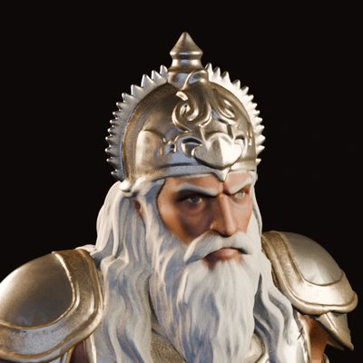
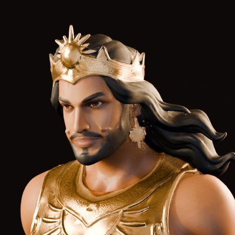

De duels

Dag 9 en 10
Bheeshm
De grootvader van de Kuru's: krachtig, snel en onverbiddelijk. Op dag negen houdt Arjun zich in uit liefde voor hem, en Krishn dwingt een keerpunt af. Op dag tien volgt de val op het pijlenbed.
- Zwakke aanval door aarzeling, tot Krishn ingrijpt
- Shikhandi als schild, een bewust ongemakkelijk gevecht
- Het pijlenbed als stille afsluiting

Dag 14 · bonus
Jayadrath
Een race tegen de zon. Arjun zwoer Jayadrath te doden vóór zonsondergang. Een bonusgevecht als de planning het toelaat; anders vertelt een film hetzelfde verhaal.
- Een tijdslimiet en een dalende zon
- Een beschermde vijand diep in de linies
- Het duister, en wat Krishn doet

Dag 17
Karn
Twee meesterschutters, drie fases. Karn is niet slechts een vijand: zijn loyaliteit, zijn vloeken en zijn beroep op dharma maken dit duel zwaar.
- De slangenpijl (Nagastr) en Krishn's reddende ingreep
- Het wiel dat wegzakt in de aarde
- Een moreel zwaar einde, geen eenvoudige overwinning